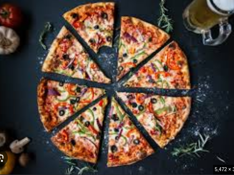

Home
Pizza

Description
Pizza is an Italian dish typically consisting of a flat base of leavened wheat-based dough topped with tomato, cheese, and other ingredients, baked at a high temperature, traditionally in a wood-fired oven.
Ingredients
- Olive Oil
- Flour
- Pepper
- Mozzarella Cheese
- Tomatoes
- Garlic
- Sausage
- Onions
- Sauce
- Oregano
Steps
- Mix warm water, yeast, sugar and olive oil in a measuring glass. Allow to sit for 5 minutes for the yeast to bloom.
- In a large bowl, combine flour and salt.
- When the yeast is bloomed, add the yeast mixture to the flour and stir until it becomes a shaggy dough.
- Transfer dough to a work surface, and knead for about 10 minutes or until it becomes a smooth dough.
- Add dough to a greased bowl and cover with a kitchen towel and allow to rise for 1 hour.
- Combine all ingredients in a food processor and set aside.
- Add your pizza stone to the oven or barbecue and preheat to 450°F.
- When the pizza dough is ready, split into 2 and roll out to desired size with flour to keep from sticking. When you're rolling, try to keep a thicker, outer crust when rolling.
- Add sauce, cheese and any other toppings and add flour or semolina to the your pizza peel and transfer your pizza into the oven or barbecue.
- Bake for 10-12 minutes or until the pizza is golden brown and bubbly.
Sources
Pizza Ingredients
Image Source
Steps